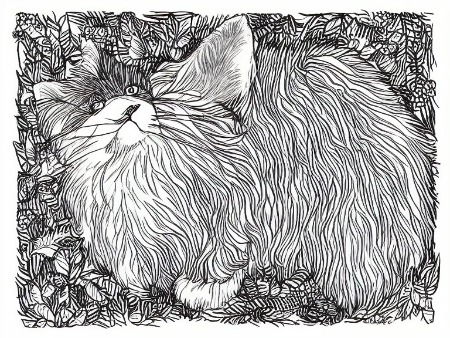
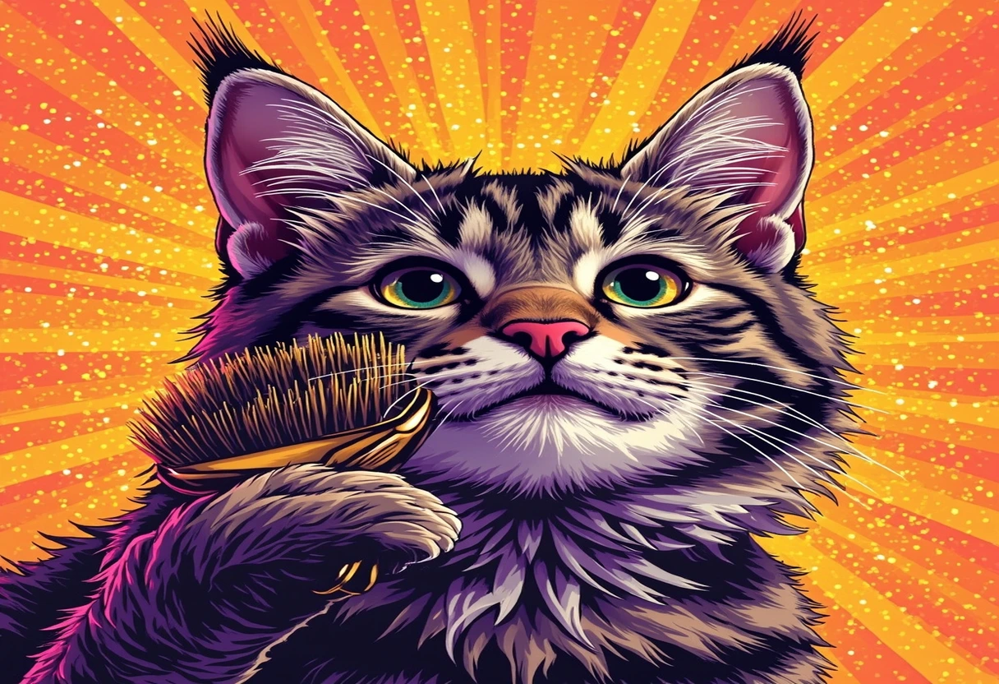

Eine Katze zieht bei Dir ein – herzlichen Glückwunsch zu dieser wunderbaren Entscheidung! Vielleicht hast Du Dich schon immer nach einer Samtpfote gesehnt, die Dir über den Rücken streicht, abends auf der Couch schnurrt und mit ihren geheimnisvollen Augen Dein Herz höherschlagen lässt. Doch bevor Du Dich endgültig verliebst und einer Katze ein Zuhause schenkst, steht eine der wichtigsten Fragen im Raum: Welche Katzenrasse passt eigentlich zu mir und meiner Lebenssituation?
Katzen sind nicht gleich Katzen. Während die eine Rasse am liebsten den ganzen Tag auf Deinem Schoß verbringt und keine Streicheleinheit auslassen will, jagt eine andere lieber durch die Wohnung, erkundet jeden Winkel und braucht geistige sowie körperliche Auslastung. Manche Katzen sind pflegeleicht und anspruchslos, andere benötigen aufwendige Fellpflege, spezielle Ernährung oder viel Freigang. Die Wahl der richtigen Rasse entscheidet maßgeblich darüber, ob Mensch und Katze ein glückliches Team werden.
In diesem ausführlichen Artikel habe ich für Dich die sechs beliebtesten Katzenrassen unter die Lupe genommen. Du erfährst alles über Charakter, Haltungsansprüche und Pflegebedarf – von der unkomplizierten Europäisch Kurzhaar bis zur exotischen Bengal. Dazu bekommst Du eine praktische Vergleichstabelle, eine Entscheidungshilfe nach Deiner Lebenssituation und ehrliche Antworten auf die Frage, welche Rasse wie viel Zeit und Geld kostet. Am Ende wirst Du genau wissen, welche Katzenrasse zu Deinem Lebensstil passt. Also lehn Dich zurück, schnapp Dir eine Tasse Tee und lass uns gemeinsam auf eine spannende Reise durch die Welt der Katzenrassen gehen!
Kurzhaar vs. Langhaar – Der erste wichtige Unterschied
Bevor wir in die einzelnen Rasseporträts eintauchen, lohnt sich ein grundsätzlicher Blick auf den wohl offensichtlichsten Unterschied zwischen Katzen: die Felllänge. Die Entscheidung zwischen einer Kurzhaar- und einer Langhaarkatze hat nämlich weitreichende Folgen für Deinen Alltag, Deinen Geldbeutel und die Zeit, die Du in die Pflege investieren musst.
Kurzhaarkatzen wie die Europäisch Kurzhaar oder die Siamkatze sind in der Fellpflege vergleichsweise anspruchslos. Ein wöchentliches Bürsten reicht meist völlig aus, um lose Haare zu entfernen und die Haut zu massieren. Während des Fellwechsels im Frühjahr und Herbst kann es etwas mehr sein, aber insgesamt bleibt der Aufwand überschaubar. Kurzhaarkatzen neigen seltener zu Verfilzungen und Haarballen, was nicht nur der Katze zugutekommt, sondern auch Deiner Couch, Deinem Teppich und Deiner Kleidung. Der Nachteil? Je nach Rasse können sie durchaus stark haaren – feine, kurze Härchen finden sich dann überall in der Wohnung wieder.
Langhaarkatzen wie die Perserkatze oder die Maine Coon sind wunderschön anzusehen, verlangen Dir aber einiges an Pflegearbeit ab. Ihr dichtes Fell muss täglich gebürstet werden, sonst drohen schmerzhafte Verfilzungen und Hautentzündungen. Besonders bei Perserkatzen mit ihrem dichten, wolligen Unterfell ist die Pflege zeitintensiv. Haarballen sind bei Langhaarkatzen ein häufiges Problem – hier helfen spezielle Pasten oder eine angepasste Ernährung. Dafür entschädigst Du Dich mit einem kuscheligen, majestätischen Anblick und einem unvergleichlich weichen Fellgefühl.
🐱 Gutes Pflegezubehör macht die Fellpflege zur Wohlfühlroutine:
Die Fellart ist also weit mehr als eine ästhetische Frage. Sie bestimmt, wie viel Zeit Du täglich für die Körperpflege Deiner Katze einplanen musst und ob Du möglicherweise häufiger zum Staubsauger greifst. Aber keine Sorge: Mit der richtigen Routine wird die Fellpflege schnell zu einem entspannten Ritual, das die Bindung zwischen Dir und Deiner Katze stärkt.

Die sechs beliebtesten Katzenrassen im Porträt
Jetzt wird es konkret! Hier stelle ich Dir sechs Katzenrassen vor, die zu den beliebtesten in Deutschland gehören. Jede Rasse hat ihren ganz eigenen Charakter, spezifische Haltungsansprüche und Pflegebedürfnisse. Finde heraus, welche Samtpfote am besten zu Dir passt.

1. Europäisch Kurzhaar – Die unkomplizierte Allrounderin
Steckbrief: 30–35 cm Schulterhöhe, 3,5–6 kg Gewicht, kurzhaarig, Lebenserwartung 12–18 Jahre.
Die Europäisch Kurzhaar ist so etwas wie die "Hauskatze" schlechthin – und das im besten Sinne des Wortes. Sie stammt von verwilderten Hauskatzen ab, die sich über Jahrhunderte an die europäischen Lebensbedingungen angepasst haben. Das Ergebnis ist eine unkomplizierte, robuste und anpassungsfähige Katze, die sich ideal für Anfänger eignet.
Charakter & Wesen: Europäisch Kurzhaar Katzen gelten als ausgeglichen, freundlich und unkompliziert. Sie sind weder übermäßig verschmust noch extrem unabhängig, sondern finden eine gesunde Mitte. Sie genießen die Gesellschaft ihrer Menschen, können aber auch gut alleine bleiben, wenn Du berufstätig bist. Diese Rasse ist neugierig und verspielt, aber nicht hyperaktiv. Sie passt sich flexibel an verschiedene Lebensumstände an – ob in der Stadtwohnung oder im Haus mit Garten.
Haltung: Die Europäisch Kurzhaar ist ein wahrer Überlebenskünstler. Sie fühlt sich sowohl als reine Wohnungskatze als auch mit Freigang wohl, solange sie ausreichend Beschäftigung und Rückzugsorte hat. Ein Kratzbaum, ein paar Spielzeuge und ein gemütliches Plätzchen auf der Fensterbank reichen ihr völlig. Sie ist gesundheitlich robust und neigt kaum zu Erbkrankheiten, was sie zu einer dankbaren und kostengünstigen Katze macht.
Pflege: Ihr kurzes, dichtes Fell ist äußerst pflegeleicht. Einmal pro Woche mit einer weichen Bürste oder einem Gummihandschuh durchgekämmt, reicht völlig aus. Während des Fellwechsels solltest Du etwas häufiger bürsten. Die Krallen sollte Du regelmäßig kontrollieren und bei Bedarf kürzen. Ansonsten ist diese Rasse pflegeleicht und benötigt keine teuren Fellpflegeprodukte.
Fazit: Die Europäisch Kurzhaar ist die ideale Katze für alle, die eine pflegeleichte, gesunde und ausgeglichene Samtpfote suchen, ohne sich auf aufwendige Rassestandards einzulassen. Besonders für Katzenanfänger, Familien und Menschen mit durchschnittlichem Zeitbudget ist sie die perfekte Wahl.
2. Perserkatze – Die majestätische Couchpotatin
Steckbrief: 25–30 cm Schulterhöhe, 3,5–7 kg Gewicht, langhaarig, Lebenserwartung 10–15 Jahre.
Mit ihrem plüschigen Fell, dem runden Gesicht und den großen, ausdrucksvollen Augen ist die Perserkatze eine der bekanntesten und edelsten Katzenrassen der Welt. Sie stammt ursprünglich aus Persien (dem heutigen Iran) und wurde im 19. Jahrhundert nach Europa gebracht, wo sie schnell zu einem beliebten Status symbol des Adels wurde.
Charakter & Wesen: Perserkatzen sind die absoluten "Couch Potatoes" unter den Katzen. Sie sind ruhig, sanftmütig und lieben es, stundenlang auf dem Schoß oder dem Sofa zu dösen. Wilde Jagdspiele sind nicht ihre Sache – eine gemütliche Spielstunde mit einer Federangel reicht ihnen völlig. Sie sind äußerst menschenbezogen und genießen die Nähe ihrer Bezugsperson, ohne dabei aufdringlich zu sein. Ihr ruhiges, ausgeglichenes Wesen macht sie zu idealen Begleitern für ältere Menschen, Wohnungen und Menschen, die ein entspanntes Zuhause schätzen.
Haltung: Die Perserkatze ist der Inbegriff der Wohnungskatze. Freigang ist aufgrund ihres ruhigen Wesens und des dichten Fells, das leicht verschmutzt und verfilzt, nicht zu empfehlen. Sie braucht ein ruhiges Zuhause ohne hektische Alltagssituationen und laute Kinder. Ein sicherer Balkon oder eine gesicherte Terrasse sind ideal. Wegen ihrer flachen Nase (Brachycephalie) kann sie bei Hitze und Anstrengung schnell Atemprobleme bekommen – achte auf eine kühle Umgebung und vermeide Stress.
Pflege: Hier liegt der Haken: Die Pflege einer Perserkatze ist enorm aufwendig. Ihr langes, dichtes Unterfell muss täglich gebürstet werden, sonst entstehen schmerzhafte Verfilzungen. Viele Perserbesitzer gehen regelmäßig zum Katzensalon oder zur Fellpflege beim Tierarzt. Auch die Augen tränen bei Perserkatzen aufgrund der flachen Nase häufig und müssen täglich mit einem weichen Tuch gereinigt werden. Wer sich für eine Perserkatze entscheidet, muss täglich mit mindestens 15–20 Minuten Fellpflege rechnen.
Fazit: Die Perserkatze ist eine wunderschöne, ruhige und liebevolle Katze – aber sie ist nichts für Menschen, die wenig Zeit in die Fellpflege investieren wollen. Wer bereit ist, täglich zu bürsten und zu reinigen, bekommt einen treuen, entspannten und ungemein kuscheligen Mitbewohner.
3. Maine Coon – Der sanfte Riese für die ganze Familie
Steckbrief: 30–40 cm Schulterhöhe, 4–9 kg (Kater bis 12 kg), halblanghaarig, Lebenserwartung 12–15 Jahre.
Die Maine Coon stammt aus dem US-Bundesstaat Maine und ist eine der größten Hauskatzenrassen der Welt. Mit ihrem kräftigen Körperbau, dem dichten, wasserabweisenden Fell und den markanten Haarbüscheln an den Ohren sieht sie aus wie eine kleine Wildkatze – und ist doch ein ausgesprochener Familienmensch.
Charakter & Wesen: Maine Coons werden oft als "sanfte Riesen" bezeichnet, und das trifft es perfekt. Sie sind freundlich, aufgeschlossen und menschenbezogen, ohne aufdringlich zu sein. Sie folgen Dir durch die Wohnung, beobachten alles genau und beteiligen sich gern am Alltag – ob beim Kochen, Arbeiten am Schreibtisch oder Fernsehen. Sie sind bekannt für ihr sanftes, fast hundeähnliches Wesen: Viele Maine Coons apportieren, lernen Kommandos und begrüßen Besucher an der Tür. Trotz ihrer Größe sind sie äußerst vorsichtig und sanft im Umgang mit Kindern.
Haltung: Aufgrund ihrer Größe benötigt die Maine Coon viel Platz. Ein großzügiger Kratzbaum, Kletterregale und ausreichend Wohnfläche sind wichtig. Sie ist kein Fan von engen, überfüllten Räumen. Maine Coons sind verspielt und behalten ihre Spiellaune bis ins hohe Alter – plane tägliche Spielzeiten mit Angeln oder Intelligenzspielzeug ein. Sie kommen mit anderen Katzen und sogar Hunden gut aus und eignen sich hervorragend für Mehrkatzenhaushalte.
Pflege: Das halblange, dichte Fell der Maine Coon ist – anders als das der Perserkatze – vergleichsweise pflegeleicht, da es weniger zum Verfilzen neigt. Zweimal pro Woche Bürsten reicht, während des Fellwechsels sollte es häufiger sein. Der regelmäßige Blick auf die Krallen und die Zahnhygiene sind auch hier wichtig. Achte auf eine hochwertige Ernährung, da Maine Coons zu Gelenkproblemen neigen können.
Fazit: Die Maine Coon ist ein Traum für Familien, Paare oder Einzelpersonen mit ausreichend Platz. Sie vereint Größe und Sanftmut auf einzigartige Weise und ist eine der kinderfreundlichsten Katzenrassen überhaupt. Wer sich an den höheren Futter- und Tierarztkosten nicht stört, bekommt einen treuen Weggefährten für viele Jahre.
🏆 Katzenbücher & Rassenkunde
Alles Wissenswerte über Katzenrassen, Erziehung und Haltung
4. Siamkatze – Die gesprächige Schmuse-Prinzessin
Steckbrief: 25–30 cm Schulterhöhe, 2,5–4,5 kg Gewicht, kurzhaarig, Lebenserwartung 12–16 Jahre.
Die Siamkatze ist eine der ältesten und bekanntesten Katzenrassen der Welt, deren Ursprung im Königreich Siam (heute Thailand) liegt. Mit ihrem schlanken, eleganten Körperbau, den strahlend blauen Augen und der charakteristischen Point-Zeichnung (dunkle Ohren, Pfoten, Schwanz und Maske) ist sie unverwechselbar.
Charakter & Wesen: Die Siamkatze ist nichts für Menschen, die eine stille, unauffällige Katze suchen. Sie hat eine laute, durchdringende Stimme und scheut sich nicht, sie einzusetzen – ob zur Begrüßung, um Futter einzufordern oder einfach nur, um mit Dir zu kommunizieren. Siamkatzen sind extrem menschenbezogen, verschmust und fordern Aufmerksamkeit regelrecht ein. Sie wollen überall dabei sein, kuscheln sich nachts unter die Bettdecke und trauern, wenn sie zu lange allein bleiben müssen. Sie sind intelligent, neugierig und lernen schnell – auch Dinge, die Du vielleicht nicht lernen wolltest (Türöffnen gehört zu ihren Spezialitäten).
Haltung: Eine Siamkatze sollte nie allein gehalten werden! Sie braucht entweder einen Menschen, der viel zu Hause ist, oder eine zweite Katze (am besten ebenfalls eine Siam oder eine andere kommunikative Rasse) als Gesellschaft. Reine Wohnungshaltung ist möglich, aber dann braucht die Wohnung viele Klettermöglichkeiten, Intelligenzspielzeug und tägliche Spielzeit. Die Siamkatze ist aktiv, springt gern in schwindelerregende Höhen und liebt Gesellschaftsspiele.
Pflege: Ihr kurzes, feines Fell ist sehr pflegeleicht. Ein gelegentliches Abstreichen mit der Hand oder einer weichen Bürste genügt. Die Siamkatze haart wenig und ist daher auch für manche Allergiker verträglicher. Achte auf Zahnhygiene, da die Rasse etwas zu Zahnfleischproblemen neigt. Die blauen Augen sind empfindlich – bei Tränenfluss oder Rötung den Tierarzt aufsuchen.
Fazit: Die Siamkatze ist der perfekte Begleiter für Menschen, die eine anhängliche, gesprächige und aktive Katze suchen und viel Zeit zu Hause verbringen. Sie ist nichts für Vielreisende oder Menschen, die eine unabhängige "pflegeleichte" Katze erwarten. Dafür bekommst Du eine treue Seelenverwandte, die Dich jeden Tag aufs Neue zum Staunen bringt.
5. Birmakatze – Die ruhige Schönheit mit dem weichen Herzen
Steckbrief: 25–30 cm Schulterhöhe, 3,5–6 kg Gewicht, halblanghaarig, Lebenserwartung 12–16 Jahre.
Die Birmakatze, auch "Heilige Birma" genannt, ist eine wahre Schönheit mit einer geheimnisvollen Legende: In den Tempeln Birmas sollen sie einst die Seelen verstorbener Mönche in das Paradies begleitet haben. Mit ihren strahlend blauen Augen, dem seidigen Fell und den weißen Pfoten – den sogenannten "Handschuhen" – ist sie eine der elegantesten Katzenrassen überhaupt.
Charakter & Wesen: Die Birmakatze vereint das Beste aus zwei Welten: Sie ist ruhig und ausgeglichen wie die Perserkatze, aber gleichzeitig aufgeschlossen und menschenbezogen wie die Siamkatze. Sie ist sanftmütig, freundlich und verträglich – sowohl mit Menschen jeden Alters als auch mit anderen Haustieren. Birmakatzen sind verschmust, aber nicht aufdringlich. Sie genießen die Gesellschaft ihrer Menschen, beobachten gern das Geschehen und sind unerschütterlich geduldig. Keine Katze, die Tassen vom Tisch stößt oder aggressiv reagiert – sie ist der Inbegriff der "braven" Katze.
Haltung: Die Birma ist eine ideale Familienkatze. Sie versteht sich hervorragend mit Kindern, anderen Katzen und sogar Hunden. Sie ist weder zu wild noch zu träge und passt sich dem Rhythmus ihrer Familie an. Als Wohnungskatze fühlt sie sich wohl, solange sie ausreichend Beschäftigung (Intelligenzspielzeug, Kratzbaum, tägliches Spiel) und Rückzugsorte hat. Ein gesicherter Balkon ist ein großes Plus. Sie sollte nicht längere Zeit allein gelassen werden – wenn Du berufstätig bist, besorge ihr am besten einen Artgenossen.
Pflege: Das halblange Fell der Birmakatze ist seidig und neigt nicht so stark zu Verfilzungen wie das der Perserkatze. Zweimal pro Woche Bürsten ist ausreichend, während des Fellwechsels etwas häufiger. Die Unterwolle ist weniger dicht, was die Pflege erleichtert. Achte auf die Zahnpflege und die Krallen. Die Birmakatze gilt als robuste Rasse mit wenigen Erbkrankheiten, aber sie neigt etwas zu Übergewicht – achte auf die Futterrationen!
Fazit: Die Birmakatze ist eine der ausgeglichensten und familienfreundlichsten Katzenrassen, die Du finden kannst. Sie ist die perfekte Wahl für Familien mit Kindern, Paare und Senioren, die eine sanfte, verschmuste Katze mit mäßigem Pflegeaufwand suchen.
6. Bengal – Die exotische Wildkatze für Zuhause
Steckbrief: 30–35 cm Schulterhöhe, 4–8 kg Gewicht, kurzhaarig, Lebenserwartung 12–16 Jahre.
Die Bengalkatze ist das Ergebnis einer Kreuzung aus Hauskatze und asiatischer Leopardkatze – und das sieht man ihr an. Mit ihrem gefleckten oder marmorierten Fell, dem muskulösen Körper und dem wilden, eleganten Gang bringt sie ein Stück exotischer Wildnis in Dein Zuhause. Aber Vorsicht: Die Bengal ist kein einfacher Mitbewohner.
Charakter & Wesen: Bengalkatzen sind extrem aktiv, intelligent und neugierig. Sie brauchen ständige geistige und körperliche Auslastung, sonst werden sie schnell destruktiv. Eine Bengal, die sich langweilt, räumt Schränke aus, öffnet Türen, dreht Wasserhähne auf und findet Wege in Schränke, von denen Du nicht wusstest, dass sie existieren. Sie sind verspielt bis ins hohe Alter, lieben Wasser (ja, viele Bengals planschen gern!) und brauchen täglich mehrere intensive Spiel- und Beschäftigungseinheiten. Sie sind ihren Menschen gegenüber anhänglich, aber auf ihre eigene, fordernde Art. Eine Bengal zu halten ist weniger "Katzenhaltung" als vielmehr "Abenteuerbegleitung".
Haltung: Diese Rasse ist definitiv nichts für Anfänger! Die Bengal braucht viel Platz: eine große Wohnung mit Kletterparcours, mehrere Kratzbäume, Intelligenzspielzeug, einen Catwalk an der Wand und Zugang zu einem gesicherten Balkon oder Garten. Clickertraining, Apportierspiele und Futtersuchspiele sind ideal. Die Bengal sollte auf keinen Fall allein gehalten werden – ein Artgenosse zum Spielen ist absolut notwendig. Wer wenig Zeit hat oder eine ruhige "Couch-Katze" sucht, liegt mit der Bengal völlig falsch.
Pflege: Das kurze, dichte Fell der Bengal ist äußerst pflegeleicht. Ein gelegentliches Bürsten reicht, da die Bengal selbst viel putzt. Das Fell fühlt sich übrigens ganz besonders an – manche beschreiben es als "seidig-glatt" oder "wildlederartig". Die Krallen sollten regelmäßig kontrolliert werden. Ansonsten ist die Bengal gesundheitlich robust, achte aber auf seriöse Züchter, die auf Erbkrankheiten wie die progressive Netzhautatrophie (PRA) testen.
Fazit: Die Bengalkatze ist nichts für Anfänger oder Menschen mit wenig Zeit. Sie ist eine Bereicherung für erfahrene Katzenhalter, die viel Platz, Zeit und Energie in die Beschäftigung ihrer Samtpfote investieren können. Wer diese Herausforderung annimmt, wird mit einer der faszinierendsten und intelligentesten Katzenrassen überhaupt belohnt.
Vergleichstabelle aller Katzenrassen
Hier hast Du alle wichtigen Daten auf einen Blick. Die Tabelle hilft Dir, die sechs Rassen direkt miteinander zu vergleichen und eine erste Entscheidung zu treffen.
| Rasse | Größe (Schulterhöhe) | Gewicht | Charakter | Fellpflege-Aufwand | Anfänger-Eignung | Kinder-Freundlichkeit |
|---|---|---|---|---|---|---|
| Europäisch Kurzhaar | 30–35 cm | 3,5–6 kg | Ausgeglichen, neugierig, flexibel | ⭐ Gering (1×/Woche) | ⭐⭐⭐⭐⭐ Sehr gut | ⭐⭐⭐⭐ Sehr gut |
| Perserkatze | 25–30 cm | 3,5–7 kg | Ruhig, sanft, verschmust | ⭐⭐⭐⭐⭐ Sehr hoch (täglich) | ⭐⭐⭐ Bedingt empfohlen | ⭐⭐⭐ Gut (ruhige Kinder) |
| Maine Coon | 30–40 cm | 4–9 kg (Kater bis 12 kg) | Freundlich, verspielt, sozial | ⭐⭐⭐ Mittel (2×/Woche) | ⭐⭐⭐⭐ Gut | ⭐⭐⭐⭐⭐ Hervorragend |
| Siamkatze | 25–30 cm | 2,5–4,5 kg | Kommunikativ, anhänglich, intelligent | ⭐ Gering (gelegentlich) | ⭐⭐⭐ Bedingt (viel Zuwendung nötig) | ⭐⭐⭐⭐ Sehr gut |
| Birmakatze | 25–30 cm | 3,5–6 kg | Sanft, ruhig, kinderfreundlich | ⭐⭐ Mittel (2×/Woche) | ⭐⭐⭐⭐⭐ Sehr gut | ⭐⭐⭐⭐⭐ Hervorragend |
| Bengal | 30–35 cm | 4–8 kg | Aktiv, intelligent, fordernd | ⭐ Gering (gelegentlich) | ⭐⭐ Nicht empfohlen für Anfänger | ⭐⭐⭐ Gut (bei viel Beschäftigung) |
Welche Katzenrasse passt zu wem?
Du hast die Porträts gelesen, die Tabelle studiert – und bist jetzt vielleicht noch unsicherer als vorher? Kein Problem! Hier bekommst Du eine klare Entscheidungshilfe nach Lebenssituation. Finde einfach die Kategorie, die auf Dich zutrifft, und schon wird die Wahl viel leichter.
🏠 Du wohnst in einer kleinen Stadtwohnung (Single oder Paar)
Wenn der Platz begrenzt ist, sind ruhige, anpassungsfähige Rassen gefragt. Die Europäisch Kurzhaar ist hier die perfekte Wahl – sie benötigt wenig Platz und ist auch mal allein zufrieden. Die Birmakatze ist ebenfalls eine gute Option, wenn Du häufiger zu Hause bist. Wer viel Wert auf Ruhe legt, wird mit der Perserkatze glücklich – bedenke aber den Pflegeaufwand.
👨👩👧👦 Du hast eine Familie mit Kindern
Hier steht die Verträglichkeit mit Kindern an erster Stelle. Die Maine Coon ist die absolute Familienkatze – ihr sanftes Wesen, ihre Geduld und ihre Größe machen sie zum perfekten Spielkameraden. Auch die Birmakatze ist durch ihre Sanftmut und Toleranz ideal für Kinder. Die Europäisch Kurzhaar kommt ebenfalls gut mit Kindern zurecht, solange diese respektvoll mit ihr umgehen. Vorsicht ist bei sehr wilden Rassen wie der Bengal geboten – sie können Kinder schnell überfordern.
👴 Du bist Rentner/in oder viel zu Hause
Wenn Du viel Zeit mit Deiner Katze verbringen kannst, stehen Dir viele Optionen offen. Die Perserkatze ist der perfekte ruhige Begleiter für gemütliche Stunden auf dem Sofa – die tägliche Fellpflege wird zum entspannten Ritual. Die Birmakatze und die Siamkatze genießen die ständige Nähe ihres Menschen und blühen in dieser Umgebung richtig auf.
💼 Du bist berufstätig und tagsüber länger weg
Auch wenn Du arbeitest, kannst Du einer Katze ein tolles Zuhause bieten – aber bitte nicht allein! Besorge immer einen Artgenossen. Die Europäisch Kurzhaar kommt mit Phasen der Ruhe am besten klar. Zwei Maine Coons oder zwei Birmakatzen unterhalten sich auch ohne Dich prächtig. Die Siamkatze und die Bengal solltest Du nur dann wählen, wenn Du viel Zeit hast oder eine Zweitkatze und jede Menge Beschäftigungsmöglichkeiten bieten kannst.
🏃♂️ Du bist sportlich, aktiv und suchst einen Abenteuerpartner
Die Bengal ist die richtige Wahl, wenn Du eine Katze suchst, die Dich fordert. Clickertraining, Apportieren, Spaziergänge an der Leine (ja, das geht mit Katzen!) – die Bengal liebt Action. Auch die Siamkatze ist aktiv und verspielt, aber nicht ganz so anstrengend wie die Bengal.
🐱 Du bist Katzenanfänger
Herzlich willkommen in der Welt der Katzen! Als Neueinsteiger solltest Du zu einer pflegeleichten und verzeihenden Rasse greifen. Die Europäisch Kurzhaar ist hier der absolute Klassiker – robust, unkompliziert und günstig im Unterhalt. Die Birmakatze ist ebenfalls anfängergeeignet, denn ihr Wesen ist so sanft, dass selbst kleine Fehler in der Haltung schnell verziehen werden. Von der Bengal oder der Siamkatze rate ich Anfängern ab – sie sind zu fordernd und können einen schnell überfordern.
Kater oder Katze – spielt das eine Rolle?
Neben der Rasse stellt sich auch die Frage nach dem Geschlecht. Kater oder Katze – macht das überhaupt einen Unterschied? Die kurze Antwort: Ja, aber er ist nicht so groß, wie viele glauben. Die lange Antwort: Es kommt auf die individuellen Persönlichkeiten an.
Kater sind in der Regel größer und schwerer als Katzen. Sie gelten oft als verschmuster, anhänglicher und "kindlicher" – behalten ihre Verspieltheit länger. Unkastrierte Kater markieren ihr Revier mit stark riechendem Urin und neigen zu Streifzügen (wenn sie Freigang haben). Nach der Kastration legt sich das Markierungsverhalten meist komplett. Kater sind oft entspannter im Umgang mit anderen Katzen, solange alle kastriert sind.
Katzen sind oft eigenständiger, vorsichtiger und gelten manchmal als "wählerischer" in ihrer Zuneigung. Sie sind nicht weniger verschmust, aber sie geben ihre Zuneigung zu ihren eigenen Bedingungen. Unkastrierte Katzen werden rollig – das bedeutet lautes Rufen, Unruhe und den Drang, nach draußen zu gehen. Auch hier hilft die Kastration ungemein. Viele Katzenhalter schwören auf die besondere, feine Intelligenz ihrer Kätzinnen.
Ganz wichtig: Wenn Du zwei Katzen halten möchtest (was ich wärmstens empfehle!), dann achte auf eine gute Vergesellschaftung. Zwei Kater aus demselben Wurf harmonieren oft ein Leben lang. Ein Kater-Katze-Pärchen funktioniert meist ebenfalls gut. Zwei Weibchen können manchmal etwas "zickiger" sein, aber auch das ist von Individuum zu Individuum verschieden. Mit einer behutsamen Zusammenführung steht einem harmonischen Katzenalltag nichts im Wege.
📚 Katzenratgeber – Wissen, das Dir und Deiner Katze hilft
Gute Bücher zur Katzenhaltung: Erziehung, Gesundheit, Beschäftigung
Wohnungskatzen-Rassen vs. Freigänger-Rassen
Eine der grundlegenden Entscheidungen in der Katzenhaltung ist die Frage: Wohnung oder Freigang? Nicht jede Rasse eignet sich für beides. Manche Katzen würden im Freien schlichtweg nicht überleben, andere würden in der Wohnung regelrecht verkümmern.
🏢 Rassen, die sich besonders als Wohnungskatzen eignen
Folgende Rassen fühlen sich in der Wohnung am wohlsten, weil ihr Jagdtrieb gering oder ihr Fell für den Freigang ungeeignet ist:
- Perserkatze: Die absolut perfekte Wohnungskatze. Ihr ruhiges Wesen, ihr dichtes Fell (das draußen schnell verfilzt und verschmutzt) und ihre geringe Neigung zu Jagdausflügen machen sie zum idealen Mitbewohner für die reine Wohnungshaltung. Ein gesicherter Balkon ist ein schönes Extra.
- Birmakatze: Auch sie ist eine klassische Wohnungskatze. Sie ist vorsichtig, nicht übermäßig abenteuerlustig und kommt mit dem gesicherten Zuhause bestens zurecht. Ihr seidiges Fell bietet wenig Schutz vor Nässe und Kälte.
- Siamkatze: Siamkatzen sind so sehr auf ihren Menschen fixiert, dass sie kaum das Bedürfnis haben, stundenlang draußen zu streifen. Solange sie genug Beschäftigung und Gesellschaft in der Wohnung haben, sind sie rundum glücklich.
🌿 Rassen, die den Freigang lieben
Diese Rassen haben einen starken Bewegungsdrang und profitieren von einem sicheren Freigang:
- Europäisch Kurzhaar: Sie kann sowohl in der Wohnung als auch mit Freigang leben. Viele Exemplare lieben es, draußen zu jagen und zu erkunden. Durch ihre Robustheit und Anpassungsfähigkeit ist sie der perfekte Allrounder.
- Bengal: Die Bengal hat einen extrem hohen Bewegungsdrang. Ein gesicherter Garten oder ein großzügiges Außengehege sind ideal. Reine Wohnungshaltung ist anspruchsvoll, da die Bengal viel Platz und Beschäftigung braucht.
- Maine Coon: Diese großen Katzen lieben die frische Luft und erkunden gern das Revier. Aufgrund ihres dichten, wasserabweisenden Fells kommen sie auch mit rauerem Wetter gut zurecht. Ein sicherer, katzensicher eingezäunter Garten ist das Paradies für eine Maine Coon.
Ganz gleich, ob Du Dich für Wohnungshaltung oder Freigang entscheidest: Wichtig ist, dass die Katze artgerecht beschäftigt wird. Auch eine Wohnungskatze braucht Klettermöglichkeiten, Verstecke, Fensterplätze und tägliche Spielzeit. Ein Kratzbaum allein reicht nicht – kombiniere verschiedene Spielzeuge, Intelligenzspiele und interaktive Einheiten, damit Deine Katze körperlich und geistig fit bleibt.
Kosten und Zeitaufwand pro Rasse
Katze ist nicht gleich Katze – das gilt auch für die Kosten. Die Anschaffung, die laufenden Kosten und der Zeitaufwand unterscheiden sich je nach Rasse erheblich. Damit Du nicht böse überrascht wirst, habe ich hier eine realistische Übersicht für Dich zusammengestellt.
Anschaffungskosten
| Rasse | Züchterpreis (ca.) | Tierheim (ca.) |
|---|---|---|
| Europäisch Kurzhaar | 50–200 € (Kleinanzeigen) / 0 € aus Tierheim | 100–200 € |
| Perserkatze | 600–1.200 € | 150–250 € (selten) |
| Maine Coon | 800–1.500 € | 150–250 € (selten) |
| Siamkatze | 500–1.000 € | 150–250 € (selten) |
| Birmakatze | 600–1.200 € | 150–250 € (selten) |
| Bengal | 800–1.500 € | 150–300 € (sehr selten) |
Laufende Kosten (monatlich, pro Katze)
Die folgende Auflistung gibt Dir einen realistischen Überblick, was monatlich auf Dich zukommt. Größere Rassen wie die Maine Coon fressen mehr, und Langhaarkatzen benötigen mehr Pflegeprodukte.
- Futter (Nass + Trocken, hochwertig): 30–80 € – abhängig von Größe und Fressverhalten. Maine Coon und Bengal sind am oberen Ende.
- Streu (klumpend, Staubarm): 15–30 € – etwa 1–2 Säcke pro Monat pro Katze.
- Katzenklo & Zubehör (einmalig): 20–100 € für ein gutes, großes Klo.
- Kratzbäume & Einrichtung (einmalig/alle 2–3 Jahre): 50–300 €. Große Kratzbäume für Maine Coons sind teurer.
- Tierarzt (Vorsorge + Impfungen + Entwurmung): 20–40 € pro Monat (umgelegt aufs Jahr).
- Spielzeug & Leckerlis: 5–20 € pro Monat.
- Krankenversicherung (optional): 15–40 € pro Monat – sehr empfehlenswert für Rassekatzen!
- Fellpflegeprodukte (nur Langhaarrassen): 5–15 € pro Monat für Bürsten, Shampoo, Pflegespray.
Gesamt monatlich (ohne Versicherung):ca. 70–170 € pro Katze. Mit Versicherung: 90–210 € pro Katze.
Zeitaufwand pro Tag
| Rasse | Fellpflege | Spiel & Beschäftigung | Sonstiges | Gesamtaufwand |
|---|---|---|---|---|
| Europäisch Kurzhaar | 2–5 Min | 15–30 Min | 5 Min | ca. 25–40 Min |
| Perserkatze | 15–25 Min | 10–15 Min | 10 Min (Augenpflege) | ca. 35–50 Min |
| Maine Coon | 5–10 Min | 20–30 Min | 5 Min | ca. 30–45 Min |
| Siamkatze | 2–5 Min | 30–45 Min | 5 Min | ca. 40–55 Min |
| Birmakatze | 5–8 Min | 20–30 Min | 5 Min | ca. 30–45 Min |
| Bengal | 2–5 Min | 45–90 Min | 10 Min (Beschäftigung) | ca. 60–105 Min |
Diese Zahlen sind natürlich nur Richtwerte. Jede Katze hat ihre eigenen Bedürfnisse, und die Zeit, die Du mit Deiner Samtpfote verbringst, wird sich ganz natürlich ergeben. Wichtig ist: Plane für die Fellpflege bei Langhaarkatzen wirklich täglich feste Zeit ein – sie darf nicht ausfallen, sonst leidet die Katze.
✅ Hochwertiges Katzenfutter und Pflegeprodukte für jede Rasse
Häufig gestellte Fragen (FAQ)
Die Europäisch Kurzhaar gilt als die pflegeleichteste Katzenrasse überhaupt. Sie hat keine besonderen Ansprüche an die Ernährung, ihr kurzes Fell benötigt kaum Pflege, sie ist gesundheitlich robust und passt sich flexibel verschiedenen Lebenssituationen an. Auch wenn Du wenig Erfahrung mit Katzen hast, wirst Du mit dieser Rasse kaum Fehler machen. Eine gute Alternative ist die Birmakatze – sie fordert zwar etwas mehr Fellpflege, ist aber im Wesen ebenso unkompliziert.
Die Maine Coon ist durch ihr sanftes, geduldiges Wesen die ideale Familienkatze. Sie ist groß und robust genug, um auch mal eine liebevolle Umarmung eines Kindes auszuhalten, und gleichzeitig vorsichtig genug, um nicht zu kratzen oder zu beißen. Die Birmakatze ist die zweite hervorragende Wahl – sie ist ruhig, tolerant und unerschütterlich freundlich. Beide Rassen verstehen sich übrigens auch bestens mit anderen Haustieren wie Hunden.
Ja, unbedingt! Viele Menschen wissen gar nicht, dass in Tierheim auch reinrassige Katzen auf ein neues Zuhause warten – darunter immer wieder Perser, Maine Coons, Siam- und Birmakatzen. Die Tiere sind meist kastriert, geimpft, gechipt und auf ihr Wesen getestet. Die Vermittlungsgebühr ist zudem deutlich niedriger als beim Züchter. Lass Dich im Tierheim beraten, welche Katze zu Deinem Lebensstil passt – die Mitarbeiter kennen ihre Tiere in- und auswendig. Gerade für Anfänger sind Tierheimkatzen (die oft Mischlinge sind) eine wunderbare Wahl.
Grundsätzlich kommen alle Katzen mit Wohnungshaltung zurecht, wenn man ihnen genug Beschäftigungsmöglichkeiten bietet. Besonders gut für kleine Wohnungen eignen sich die Perserkatze (ruhig, wenig Bewegungsdrang), die Birmakatze (sanft, anpassungsfähig) und die Europäisch Kurzhaar (unkompliziert, flexibel). Wichtig ist: Auch in einer kleinen Wohnung braucht die Katze einen Kratzbaum, Fensterplätze, Verstecke und tägliche Spielzeit. Ein Artgenosse ist ebenfalls zu empfehlen – zwei Katzen brauchen nicht doppelt so viel Platz, aber doppelt so viel Gesellschaft.
Leider ja. Viele Rassekatzen sind durch jahrzehntelange Zucht auf bestimmte Merkmale anfälliger für Erbkrankheiten. Perserkatzen leiden häufig unter Atemproblemen (Brachycephalie), Tränenfluss und Zahnfehlstellungen. Maine Coons sind anfällig für Hüftdysplasie und Herzmuskelerkrankungen (HCM). Bengals können an Netzhautatrophie (PRA) erkranken. Siamkatzen neigen zu Zahnfleischentzündungen und Atemwegserkrankungen. Eine gute, seriöse Zucht testet ihre Tiere auf diese Krankheiten – achte bei der Auswahl unbedingt auf die entsprechenden Nachweise! Die Europäisch Kurzhaar als Naturrasse hat diese Probleme nicht und gilt als besonders gesund und robust.
🐱 Alles für Deine Traumkatze
Von hochwertigem Futter über Pflegeprodukte bis zu Spielzeug und Kratzbäumen:
Fazit: Finde Deine perfekte Samtpfote
Wir sind am Ende unserer großen Katzenrassen-Reise angekommen – und Du hast jetzt ein ziemlich umfassendes Bild davon, welche Katzenrasse zu Dir passen könnte. Aber vielleicht hast Du auch gemerkt, dass die Entscheidung zwischen den Rassen gar nicht so einfach ist. Jede Katze hat ihren eigenen Charakter, ihre eigenen Bedürfnisse und ihre ganz besondere Art, die Welt zu sehen.
Keine der hier vorgestellten Rassen ist grundsätzlich "besser" oder "schlechter" als die anderen. Die Frage ist nicht, welche Katzenrasse die schönste oder beliebteste ist – sondern welche zu Dir und Deinem Leben passt. Bist Du ein ruhiger Mensch, der die Abende auf dem Sofa verbringt? Dann könnte die Perserkatze oder Birmakatze Dein perfekter Begleiter sein. Bist Du aktiv, viel zu Hause und suchst einen intelligenten, fordernden Partner? Dann könnte die Bengal oder Siamkatze Dein Herz erobern. Suchst Du einfach eine unkomplizierte, gesunde Katze, die mit allem klarkommt? Dann ist die Europäisch Kurzhaar oder Maine Coon genau richtig.
Denk auch daran: Du musst Dir nicht unbedingt eine Rassekatze vom Züchter holen. In den deutschen Tierheimen warten Tausende wunderbare Katzen – Mischlinge und auch reinrassige Exemplare – auf ein liebevolles Zuhause. Sie sind oft geimpft, kastriert, gechipt und auf ihren Charakter getestet. Du schenkst einem Tier eine zweite Chance – und bekommst eine dankbare, liebevolle Begleiterin geschenkt.
Am Ende zählt nicht das Fellmuster, die Augenfarbe oder der Stammbaum. Es zählt die Verbindung, die Du zu Deiner Katze aufbaust. Die Art, wie sie schnurrt, wenn Du sie am Kinn krauelst. Der Blick, den ihr euch zuwerft, wenn ihr wieder mal dieselbe Stelle auf dem Sofa teilen wollt. Das Vertrauen, das ihr über Wochen, Monate und Jahre hinweg aufbaut. Das ist es, was eine Katzenhaltung so unendlich bereichernd macht – unabhängig von der Rasse.
📖 Katzenrassen-Buch mit ausführlichen Porträts
Noch tiefer eintauchen? Dieses Buch stellt über 40 Katzenrassen vor: